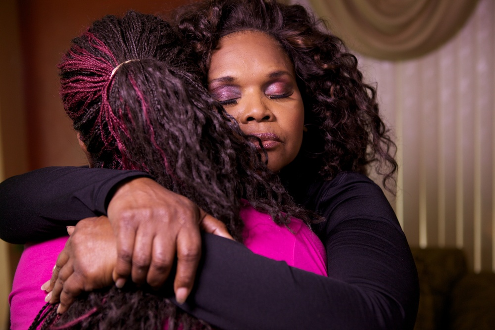

Dreamcatcher
Directed by Kim Longinotto | United States | 2015 | 97 min. 



“‘Dreamcatcher’ is a raw, powerful, and downright inspirational documentary that once again proves how much positive change even a single person can bring to the world.”- Oktay Ege Kozak, Indie Wire
“Rightly confident in the potency of her raw material, Longinotto feels little compulsion to trick her film out with fussy or manipulative formal devices. Content is king here…" -Guy Lodge, Variety
Premiere:
Friday, March 18
7:00 PM | McConomy Auditorium | CMU University Center
Event Includes:
+ Special appearance and panel/ Q & A with Brenda Myers-Powell, Co-Founder and Executive Director of the Dreamcatcher Foundation
+ Dessert Reception
Sponsored by:
Sembene- The Film & Arts Festival
Synopsis
If human trafficking doesn’t seem like an American problem, Brenda Myers-Powell will make you think again. Born in one of the poorest ghettos of Chicago, Brenda grew up motherless in an environment of physical, mental and sexual abuse at the hands of trusted family members. Her upbringing made it all too easy to slip into a world of prostitution and drug addiction. For twenty-five years she called herself 'Breezy,’ convinced this world was her only option, but after a violent encounter with a client, Brenda awoke in the hospital, with all the skin on her face and side painfully torn off. After hitting such a dangerous low, Brenda turned her life around.
Dreamcatcher explores the cycle of neglect, violence and exploitation which each year leaves thousands upon thousands of girls and women feeling that prostitution is the only means to survival. By following the very charming, charismatic and truly empathic Brenda, we enter the lives of young women and see in verité footage their realities from their points of view. While the world may overlook these women and men, thankfully Brenda has not, providing an unflinching expose which contrasts seeming hopelessness against the difference that one person can make in the lives of many.
Awards
- Sundance Film Festival, 2015, World Cinema Documentary Directing Award
- Sundance Film Festival, 2015, World Cinema Documentary Grand Jury Prize Nominee
- Jerusalem Film Festival, 2015, “In The Spirit of Freedom” Best Documentary Nominee
Director Kim Longinotto

Kim Longinotto is a British documentary filmmaker, well known for making films about extraordinary women and also the plight of female victims of oppression or discrimination. Longinotto studied camera and directing at the National Film and Television School in Beaconsfield, England, where she now tutors occasionally. At the age of 10, she was sent to a draconian all-girls boarding school, where she found it hard to make friends due to the mistress forbidding anyone to talk to her for a term after she became lost during a school trip. After a period of homelessness Longinotto went on to Essex University to study English and European literature and later followed friend and future filmmaker Nick Broomfield to the National Film and Television School. While studying, she made a documentary about her boarding school that was shown at the London Film Festival. She has continued to be a prolific, observational documentary filmmaker ever since. She has received a number of awards for her films over the years, including a BAFTA for her Divorce Iranian Style.